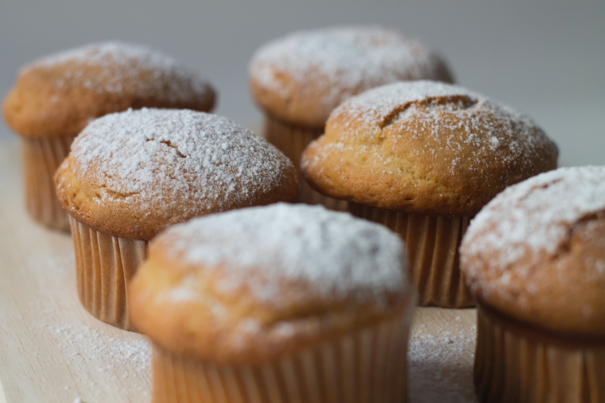

Coffee Muffins

Muffin Ingredients:
- 1 1/2 Cups Flour
- 3/4 Cup Sugar
- 2 Teaspoons Baking Powder
- 1 Teaspoon Cinnamon
- 1/4 Teaspoon Baking Soda
- 1/4 Teaspoon Salt
- 3/4 Cup Milk
- 1/3 Cup Vegetable Oil
- 2 Eggs
Glaze Ingredients:
- 1/4 Cup confectioners’ Sugar
- 1/2 Teaspoon Vanilla Extract
- 1 Teaspoon Milk
Recipe:
- Preaheat oven to 375 degrees. Add liners to mufffin tin.
- Combine flour, sugar,baking powder, cinnamon, baking soda and salt in a large bowl.
- Whisk together milk, canola oil and egg.
- Pour mixture over dry ingredients and stir using a rubber spatula.
- Pour batter evenly into muffin tin.
- Bake for 15 - 20 minutes until toothpick comes out clean.
- For glaze, whisk together sugar, vanilla, and milk until smooth. Add more sugar as needed to thicken glaze.
- Glaze muffins once cool.